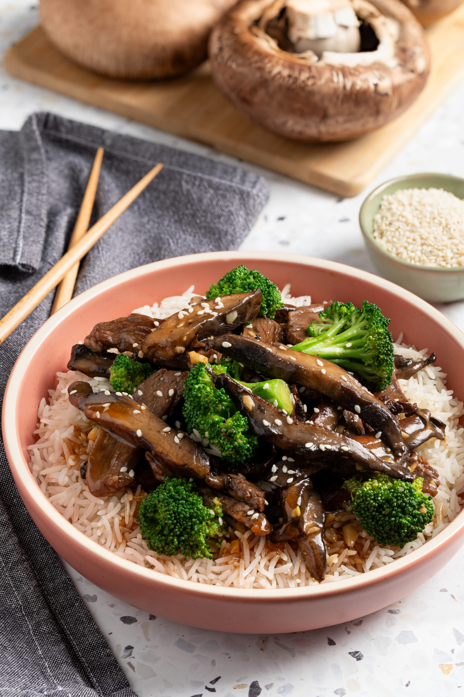

"Beef and brocoli"

"Grab your chopsticks and tune in for a simple yet tasty chinese night in"
"Beef and Broccoli is an easy, 1-pan, 30-minute meal that is loaded with fresh broccoli, tender nutrition-packed beef, and the best stir fry sauce.
Thank you to Beef. It"s What"s for Dinner. on behalf of the Beef Checkoff for sponsoring this recipe which is perfect for the busy back to school season.
"Stir fry recipes like our Beef Stir Fry and Fried Rice have become reader favorites because they are fast and healthier than going out.
This Beef and Broccoli Recipe definitely satisfies the craving for takeout."
"Ingrediemts"
- 'brocoli'
- 'soy sauce'
- 'garlic'
- 'ginger'
- 'oyster sauce'
- 'brown sugar'
- 'beef broth'
- 'onion'
- 'rice wine'
- 'flank stake'
- 'honey'
- 'vegetable oil'
"Steps"
- "1.Mince the onion and garlic and fry until fragrant in your wok."
- "2.Add the wine, oil, oyster sauce, brown sugar and honey and stir in low to medium heat."
- "3. Add the beef and cook for 10-15 minutes, increase the heat and add the brocoli to finish cooking for 5 more minutes."